KRNews / 23.02.2010
Рекорды говорят сами
В 2010 году Станислав Хаитов, представитель СК "Богатырь", выступил на чемпионате области по силовому троеборью среди юниоров и установил два рекорда Днепропетровщины в своей возрастной группе.
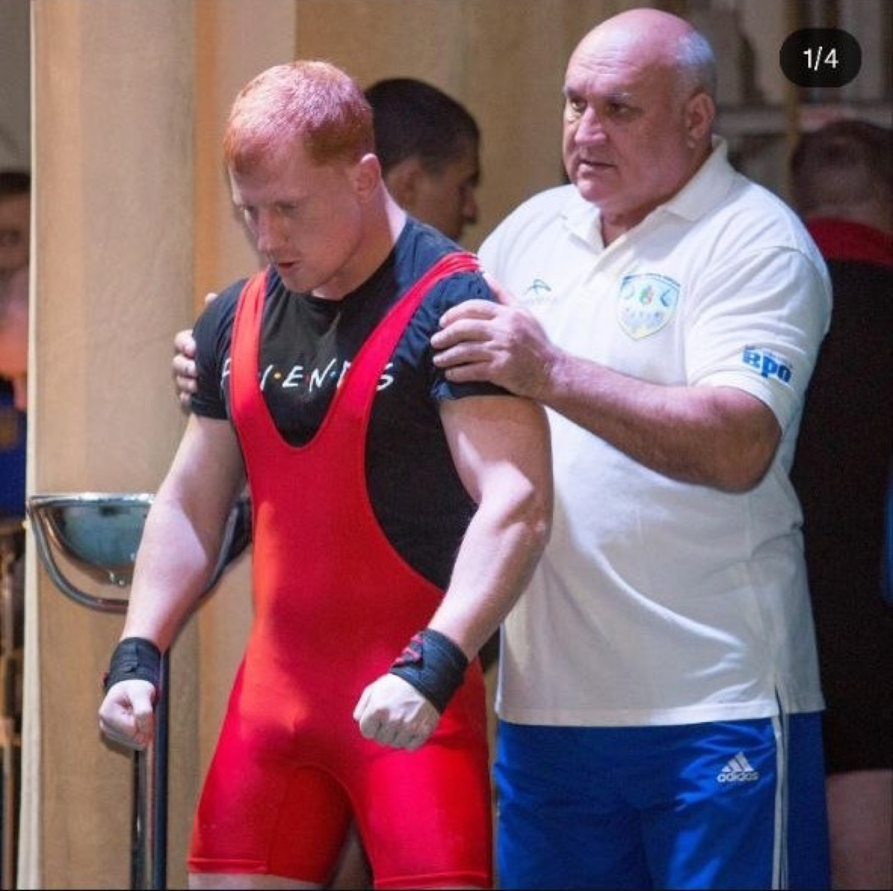
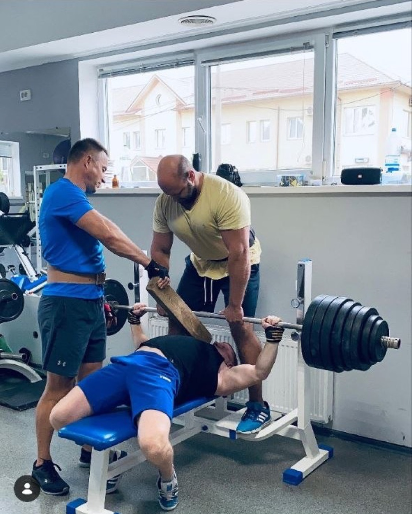
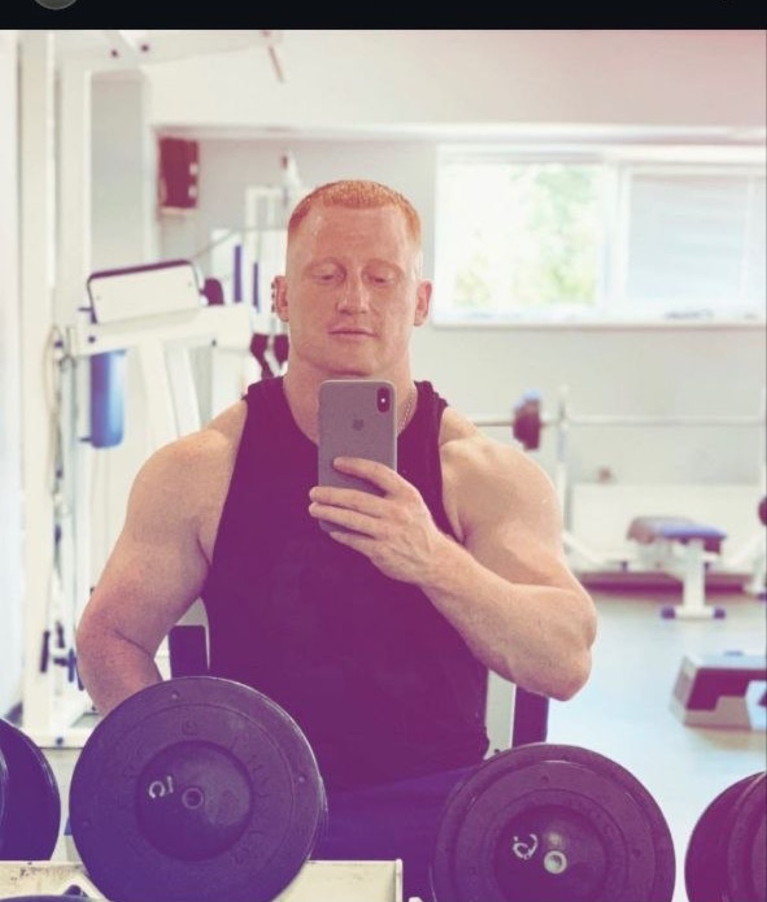
Не только килограммы
Тренерский взгляд: спокойно, точно, по делу
Тренер - это не человек с секундомером и списком упражнений. Это тот, кто видит запас силы раньше, чем его видишь ты сам. Тот, кто вовремя скажет "добавь", вовремя остановит и всегда напомнит: техника, терпение, режим.
Стас, спасибо за требовательность, спокойствие, опыт и за ту атмосферу, в которой хочется становиться лучше.
Old school folder
Архив: были времена
До рекордов, тренерского опыта и серьезного взгляда на подходах были поездки, друзья, странные фото, молодость и тот самый вайб, который невозможно повторить специально.
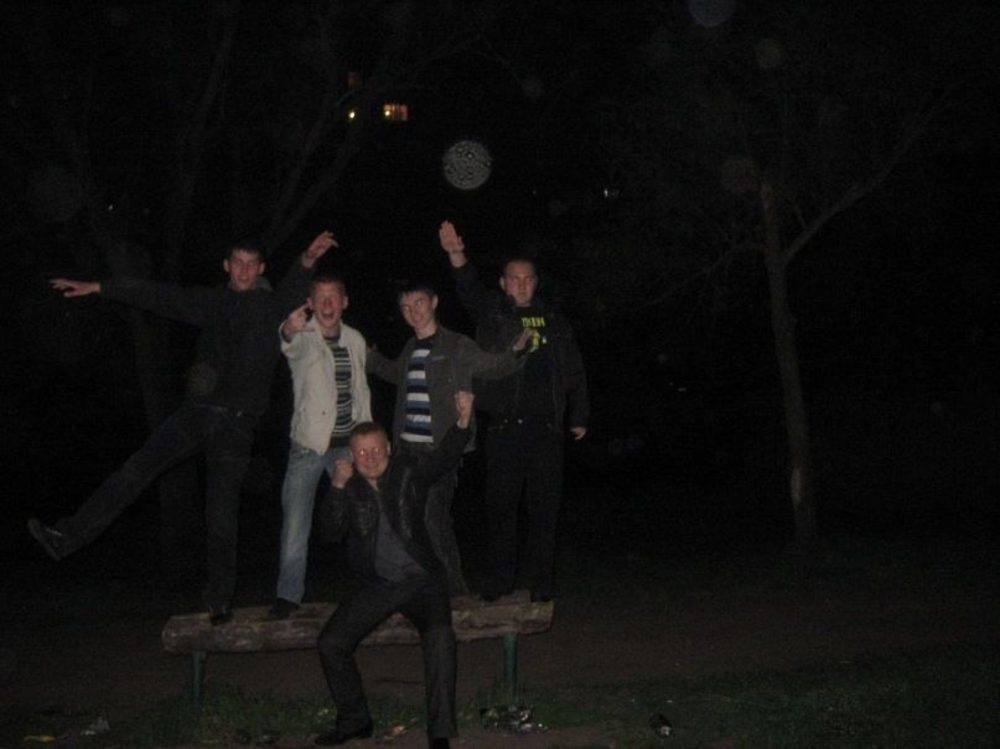
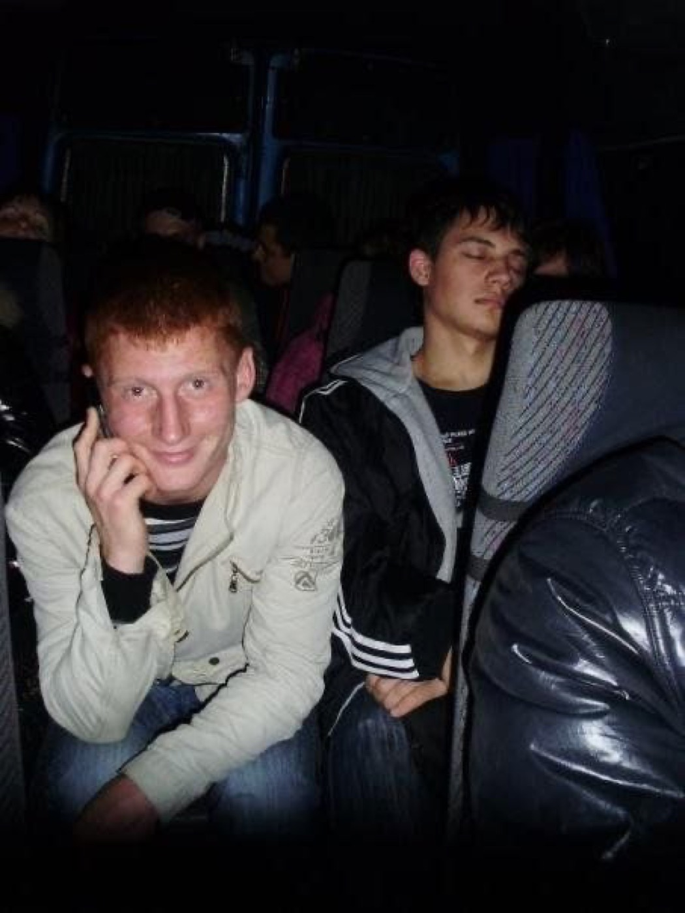
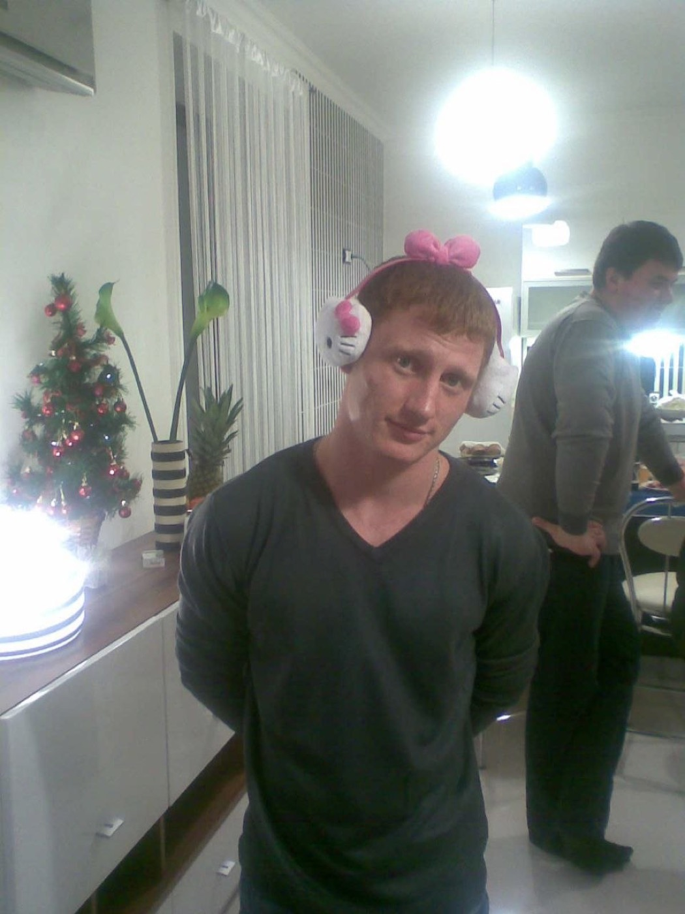
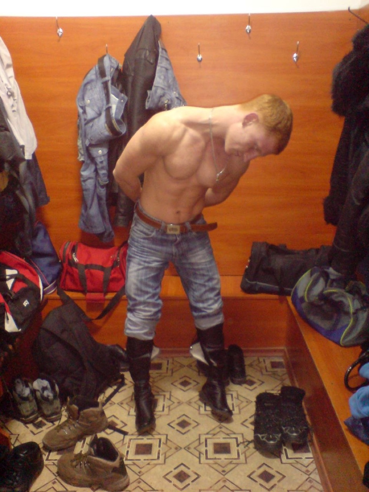
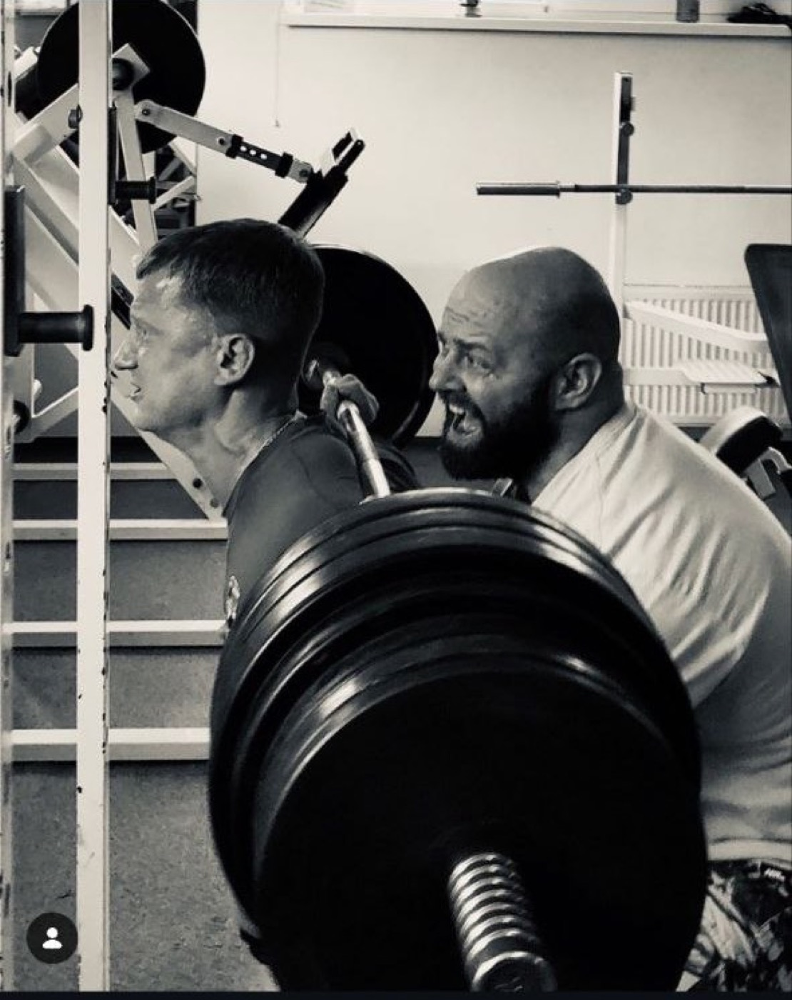
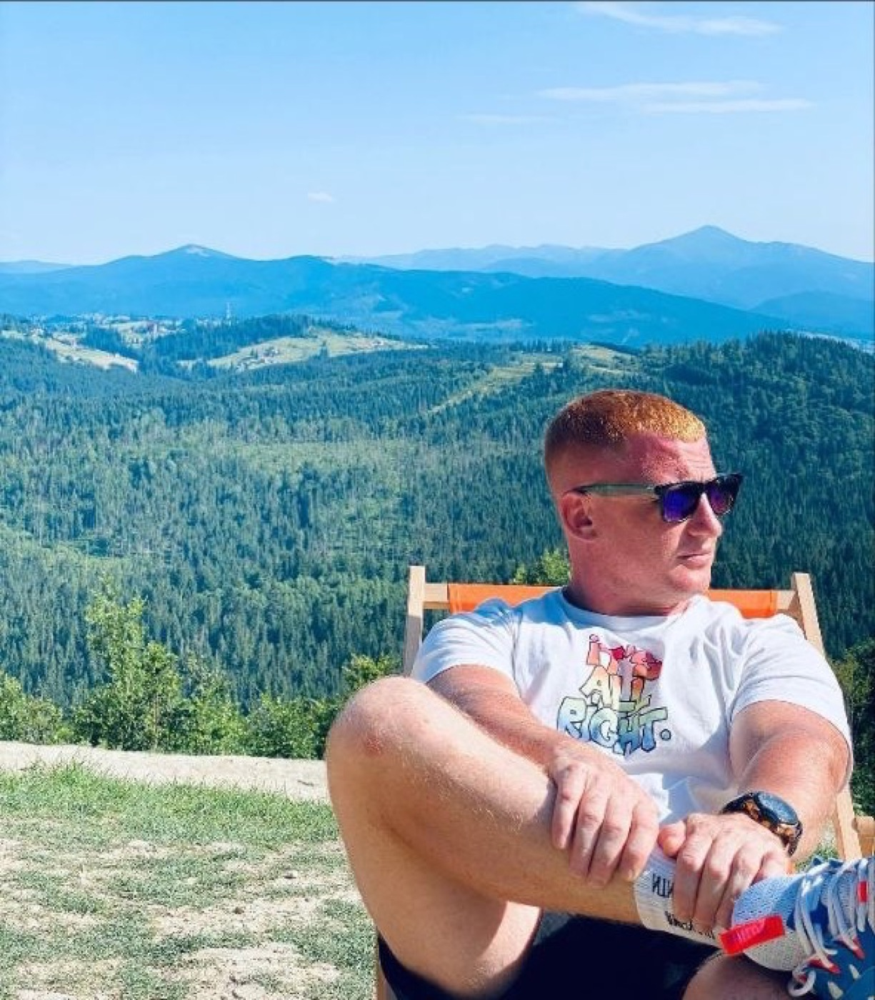
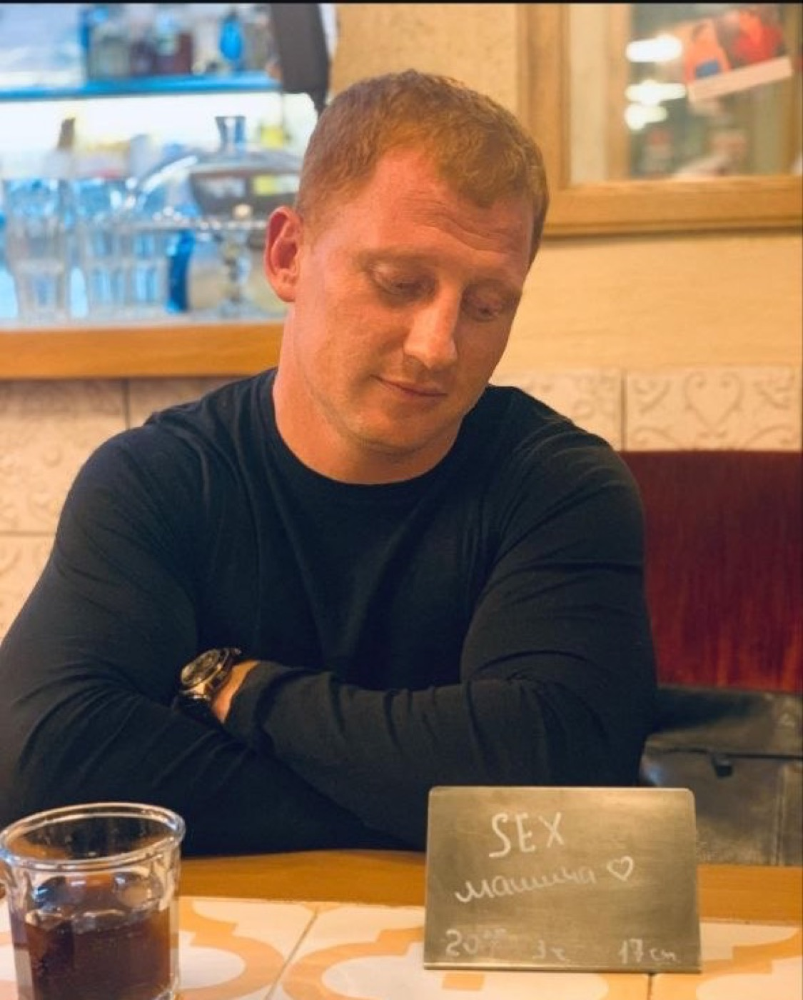
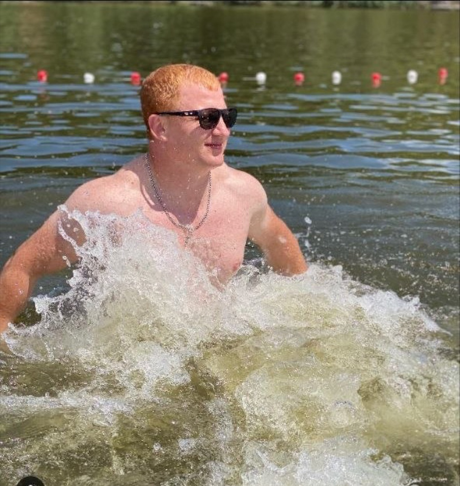
Record holder / coach / legend
С днем рождения!
Стас, желаем крепкого здоровья, энергии, благодарных учеников, новых целей и легкости в каждом важном подходе. Пусть дома будет тепло, в зале - рабочая атмосфера, а в жизни - люди, которые ценят тебя так же сильно, как мы.
За Тренера. За силу. За Стаса Хаитова.